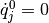
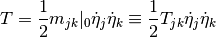
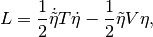
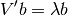
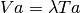
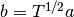

Classical Mechanics¶
Oscillators¶
In general, the Lagragian for a system with n general coordinates can be

To write down equation of motion, we need the following terms,

Then equation of motion is

Generally, we can’t solve this system. But there is an interesting limit. The system may have equilibrium points. We can study systems oscillating around equilibrium points.
At equilibrium, the system can stay steady, i.e., . This gives us

for all j.
Now for small deviations, we can expand the system around equilibrium points.

Then


So we have the Lagrangian for small oscillations,

Typing indices using LaTeX is so annoying. So we’ll use matrix notations and Lagragian becomes

in which  and
and  matrices are n by n real and symmetric.
matrices are n by n real and symmetric.
(We need to diagonalize T and V. First question comes to us is:
** Is is possible to diagonalize both T and V at the same time? **
We can have a look at the surface  , which is a elliptical surface with coordinates
, which is a elliptical surface with coordinates  .)
.)
Use the following transformation

Then transpose

So we have the new Lagragian

Define  .
.
Next we need to diagonalize V’ by using its eigen vectors.

is equivalent to

with . So we have

is same as

in which  is the eigen value of this function.
is the eigen value of this function.
Hamiltonian Dynamics¶
Phase space